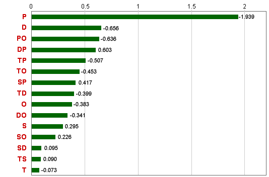
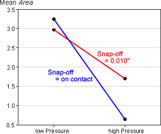

Adding a fifth factor
Other orthogonal factors can be added to the complete 24 factorial design by setting their levels according to the ±1 values corresponding to interactions between the four original variables.
The best way to allocate levels of a fifth factor, E, is to confound it with the 4-factor interaction between A, B, C and D,
E = ABCD
Confounding
The other confounded terms can be found by multiplying the ±1 columns corresponding to the main effects and interactions and noting that any column squared is +1,
A2 = B2 = C2 = D2 = E2 = 1
From this, it can be shown that
A = BCDE
B = ACDE
C = ABDE
D = ABCE
E = ABCD
The main effects are therefore only confounded with 4-factor interactions. Also,
AB = CDE
AC = BDE
etc
Therefore the ten 2-factor interactions are not confounded with each other and can all be independently estimated.
Since all main effects and 2-factor interactions can be independently estimated, this design is said to have resolution V.
This is called a 25-1 fractional factorial design.
Testing
Since there are five main effects and ten 2-factor interactions, there are no degrees of freedom left from the total of 15 degrees of freedom for a residual sum of squares. It is therefore impossible to test the significance of the effects unless either:
Note that a decision to assume some 2-factor interactions to be zero (or at least neglibile) must be made before the data are analysed. Combining the smallest interactions to form a residual sum of squares will underestimate the experimental variability and result in effects that seem more significant than they really are.
Confounding in 25-1 design
The diagram below allows the fifth factor, E, to be confounded with different effects in a complete 24 factorial design and shows the resulting confounding of effects.
Click the red heading at the top of the table to set the term that is used to define the levels of E. Observe that when E is confounded with a 3-factor interaction such as ABC, some 2-factor interactions are confounded with each other, so the design is only resolution IV. However when E is confounded with the ABCD interaction, all main effects and 2-factor interactions are orthogonal.
Solder paste experiment
A stencil printing process is used to deposit solder on printed circuit boards (PCBs) for electronic components. Variability in this printing process can result in defective PCBs, so a study was conducted to investigate how various process variables affect the soldering quality.
Five factors were identified that seemed to have the major impact on the solder quality, and an experiment was conducted to investigate how they affected a response variable Area that summarised the difference between the length and height of stencil features and the corresponding features in a single PCB. The factors and their levels were:
| Factor | Abbreviation | Level -1 | Level +1 |
|---|---|---|---|
| Thaw | T | 24 hr | 48 hr |
| Print speed | S | 0.5 in / sec | 1.0 in / sec |
| Print direction | D | front | back |
| Print pressure | P | contact + 30 | contact + 120 |
| Snap-off | O | 0.010" | on contact |
A 25-1 fractional factorial design was conducted, defined by the confounding relationship,
O = TSDP
The response from the 16 runs of the experiment, Area, is shown in the table below.
| Factor | Response | |||||
|---|---|---|---|---|---|---|
| Run | T | S | D | P | O | Area |
| 1 | -1 | -1 | -1 | -1 | +1 | 3.897 |
| 2 | -1 | -1 | -1 | +1 | -1 | 1.260 |
| 3 | -1 | -1 | +1 | -1 | -1 | 2.462 |
| 4 | -1 | -1 | +1 | +1 | +1 | 0.720 |
| 5 | -1 | +1 | -1 | -1 | -1 | 2.542 |
| 6 | -1 | +1 | -1 | +1 | +1 | 1.562 |
| 7 | -1 | +1 | +1 | -1 | +1 | 2.711 |
| 8 | -1 | +1 | +1 | +1 | -1 | 2.343 |
| 9 | +1 | -1 | -1 | -1 | -1 | 4.272 |
| 10 | +1 | -1 | -1 | +1 | +1 | 0.085 |
| 11 | +1 | -1 | +1 | -1 | +1 | 2.093 |
| 12 | +1 | -1 | +1 | +1 | -1 | 1.236 |
| 13 | +1 | +1 | -1 | -1 | +1 | 4.286 |
| 14 | +1 | +1 | -1 | +1 | -1 | 1.922 |
| 15 | +1 | +1 | +1 | -1 | -1 | 2.697 |
| 16 | +1 | +1 | +1 | +1 | +1 | 0.320 |
In this design, all main effects and 2-factor interactions can be independently estimated. The absolute values of all effects are shown in the diagram below, with the terms ordered by size (a Pareto chart).

The main effect for Print pressure, P, clearly dominates this diagram — the effect of changing the print pressure is far greater than the effects of changing the other factors.
The Pareto chart provides a good comparison of the main effects. However if some interactions are thought to be important, diagrams showing the response means help to describe the effects. For example, the interaction between Print pressure, P, and Snap-off, O, is the highest interaction effect, so the diagram below describes the effects of both Print pressure and Snap-off.

Even if 3-factor and higher-order interactions are assumed to be negligible, there are no residual degrees of freedom for this experiment so the significance of main effects and 2-factor interactions cannot be tested.